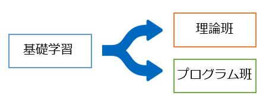

前期活動
2016年度の活動月表です。昨年度ではプログラムを動かす時間が短かった問題があったため今年度では基礎的な学習を早めて少しでもプログラムを動かせる時間を確保するために前倒しで活動をしました。
4月
本プロジェクトが始動した。プロジェクトで使用するソフトのインストール、説明が行われた。また、担当教員に楕円曲線について講説していただいた。(基礎学習期間)
5月
プログラムを動かす時間を確保するために理論班、プログラム班の2つ班に分かれ学習と実装を並列して活動を行うことを決めた。

理論班は楕円曲線に関する文献を探して計算コスト減少の為のアルゴリズム(手法)を探すこと、プログラム班はより高速なプログラムを作成することとなった。理論班は、素因数を見つける効率が1.5倍向上することが見込める"Atkin-Morain ECPPアルゴリズム"の理解に励んだ。プログラム班は、基礎学習を活かして、昨年度のプログラムから改良できそうな点を探し、実装を進めた。
理論班:文献からECMの計算コストを減らす手法を探す。2016年度はAtkin-Moraine ECPPについての論文を読み、理解を進めた。
プログラム班:基礎学習で学んだことを活かし、昨年度のプログラムを改良を進めた。
6月
理論班は引き続き、Atkin-Moraine ECPPアルゴリズムの文献を探し、理解することに成功した。プログラム班は、"Extended twisted Edwards coordinates"というアルゴリズムの実装と、楕円曲線の生成法の変更を行った。また、7月に行われる中間発表のための準備を行った。
7月
中間発表を行った。反省会を行い、そこで出た反省を後期の活動に生かすこととなった。